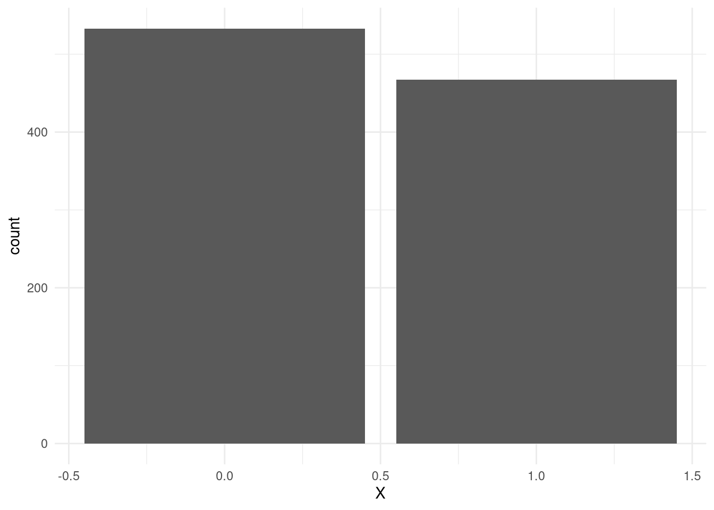
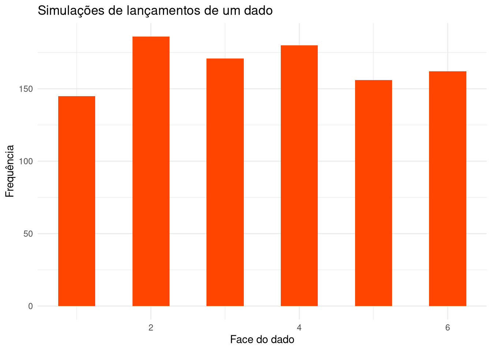

library(tidyverse)Simulações
Introdução
Em aula, estudamos Processos Geradores de Dados (PGDs) e probabilidade. Nestas notas, veremos agora como podemos usar funções de probabilidade – que, lembrando, servem para atribuir probabilidade a eventos possíveis, que chamamos de \(\omega\), de um espaço amostral, que definimos como \(\Omega\) – para simular dados. Isso será particularmente útil nas próximas aulas, mas também nos dará mais experiência com visualização de dados usando ggplot2.
Antes de começar, vamos carregar o tidyverse:
Distribuições
O R tem diversas funções que nos permitem sortear números de acordo com algumas distribuições. Abaixo, exemplos das mais comuns.
# Sorteia um número entre 0 e 1
runif(1, min = 0, max = 1)[1] 0.03154855# Sorteia 1 com probabilidade 0.5
rbinom(1, size = 1, prob = 0.5)[1] 0# Dez sequências de Bernoulli com prob. 0.5
rbinom(1, size = 10, prob = 0.5)[1] 5# Sorteia um número de uma distribuição normal
rnorm(1, mean = 0, sd = 1)[1] 0.07344313# Sorteia um número de uma distribuição Poisson
rpois(1, lambda = 1)[1] 1Criando funções de probabilidade
Algumas funções para sortear valores de distribuições mais complexas podem ser construídas a partir de funções mais simples. Por exemplo, podemos usar a uniforme para simular uma distribuição Bernoulli:
p <- 0.5
resultado <- runif(1, min = 0, max = 1) < p
as.numeric(resultado)[1] 0O que fizemos? Basicamente, realizamos um sorteio a partir de uma distribuição \(Uniforme(0, 1)\) e, se ele for maior que \(p\), o resultistribuiçado desse sorteio é convertido para 1, caso contrário, para 0.
Podemos fazer esse processo mil vezes para visualizar o resultado com um gráfico de barras:
p <- 0.5
n <- 1000
X <- runif(n, min = 0, max = 1) < p
X <- as.numeric(X)
tibble(X = X) %>%
ggplot(aes(x = X)) +
geom_bar() +
theme_minimal()
Simulando lançamentos de um dado
Lançamentos de um dado geralmente são simulados a partir de uma distribuição multinomial – mas, já que em um lançamento a probabilidade de tirarmos qualquer face em um sorteio é a mesma (e.g., \(p_1 = p_2 = ... p_6\)), podemos criar nossa própria função de probabilidade para simular esse processo usando runif novamente. A ideia é a seguinte:
- Sortearemos um número entre 0 e 6 usando \(X \sim Unif(0, 6)\)
- Se \(0 < x \leq 1\), o resultado é 1; se \(1 < x \leq 2\), o resultado é 2; e assim por diante
- Repetimos o processo \(n\) vezes
n <- 1000
X <- runif(n, min = 0, max = 6)
X <- ceiling(X)
tibble(X = X) %>%
ggplot(aes(x = X)) +
geom_bar(width = 0.5, fill = "orangered") +
theme_minimal() +
labs(y = "Frequência", x = "Face do dado",
title = "Simulações de lançamentos de um dado")